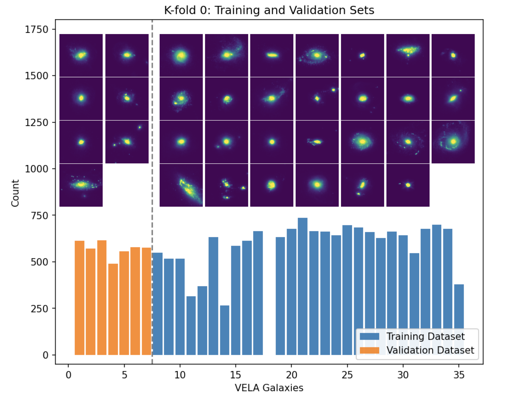
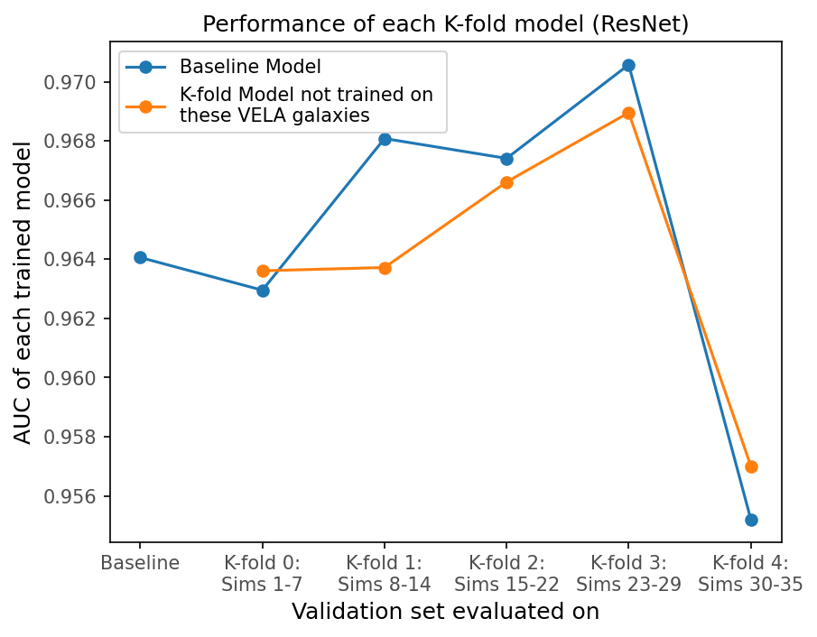
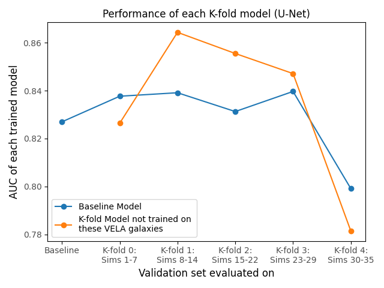

JWST Lens Simulations: Smallest Einstein Rings
Hubble Space Telescope AR Program
This program (AR 18151, PI: Huang) aims to leverage
strong lensing to provide unique constraints on the abundance of dark matter subhalos.
By modeling lenses with exquisite HST and JWST imaging, we can measure the halo mass function down to
small scales and test the predictions of cold dark matter versus alternative models.
This program is built on Silver, Wang, Huang et al. (2025, ApJ accepted), we show that we
can detect systems with $\theta_E$ down to the diffraction limit of JWST, or
~0.03″.
We simulated strong lens systems with both conventional-sized $\theta_E$ ($\gtrsim 0.5''$) and very
small $\theta_E$ ("dimple lenses") down to 0.03″, the diffraction limit of JWST NIRCam.
We used realistic simulated background source galaxies, drawn from the
VELA simulations.
We used a custom ResNet (Huang et al. 2021) to find both conventional strong lenses and these small "dimple lenses".
We further applied a U-Net to pinpoint the location of the small $\theta_E$ systems in a cutout image.
For both the ResNet and U-Net, we set high thresholds to control false positives.
Significance
This expanded window of strong lensing provides a way to find dwarf galaxies at cosmological distances
and populate the low-mass end of the dark matter halo mass function between $10^{10}$ and $10^{12} M_\odot$,
a previously unexplored regime beyond the local Universe.
It is a long paper. I highlight one key result from the paper below.
We used $k$-fold to demonstrate that the classifcation and detection of the smallest lenses in our simulations is not due
to overfitting by the neural networks. Below we show three figures from the paper.
There are 34 3-D simulated VELA galaxies at a number of redshift slices through their evolution histories.
Left Figure: For datasets for the $k$-fold 0th split, we show the histogram of the 27 VELA galaxies used in the training (blue bars)
and the remaining 7 used for the validation (orange bars). VELA images of the galaxies at $z=1$ with a randomly chosen angle are shown above the histogram.
Middle Figure: The AUC performance for the ResNet model of each $k$-fold model evaluated on its corresponding validation set compared to that of
the baseline model (the baseline model does the train/validation split randomly without isolating a subset of the VELA galaxies for valdiation;
see § 3.2.2.2 in the paper). The horizontal axis indicates the validation set used.
Right Figure: The U-Net results, which are consistent with the ResNet results: The AUC performance of each $k$-fold model evaluated on
its corresponding validation set compared to that of the baseline model (§ 3.2.2.2 in the paper) for the U-Net model.
Note that the AUC is calculated using the pixel-level precision recall curve, rather than the traditional PRC curve (see § 4.1.3 of the paper).
These results show that the neural networks "recognize" the lensing features instead of memorizing the
individual VELA simulations.



Our codes can be found at: